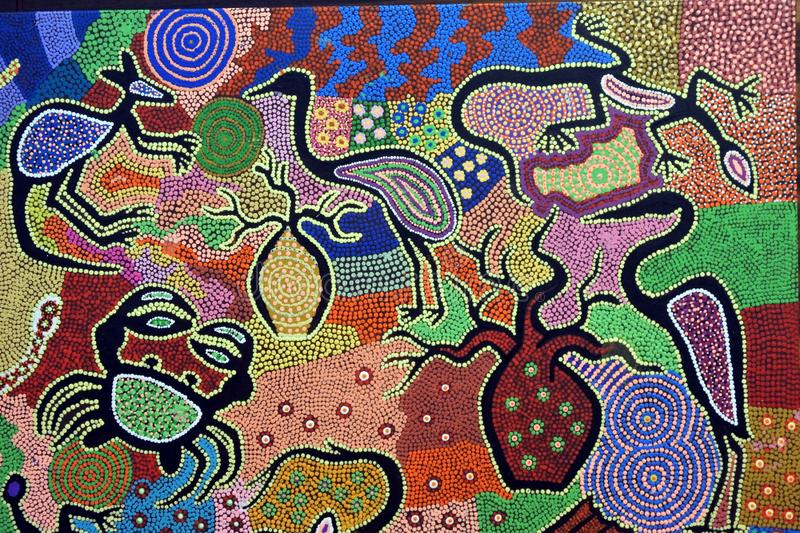

Area:- 3 million square miles(smallest continent)
No. of countries:- 14
Population:- 25 million
About the Australia(very short)
Australia, the smallest continent and one of the largest countries on Earth, lying between the Pacific and Indian oceans
in the Southern Hemisphere. This continent might be small but it has a variety of fauna. It has large population of native people, also referred as Aborigines.
The main language of Australia is English. If your favourite animals are Koala, Kangaroo, or if you are little adventerous and you like rodent and reptilians like snakes and lizard, than
you must come to Australia once. 
If you love music than the sydney opera house is for you. And at last if you are adventures then you have to visit the The outback of Australia.
For more information, Go to Australia wikipedia
Why you should visit Australia: